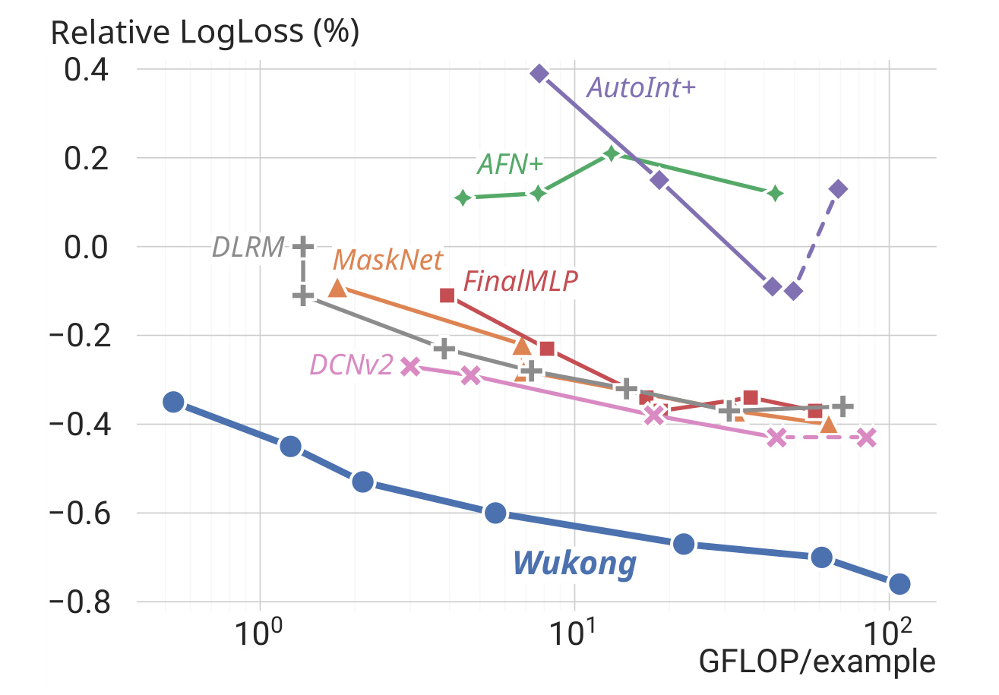
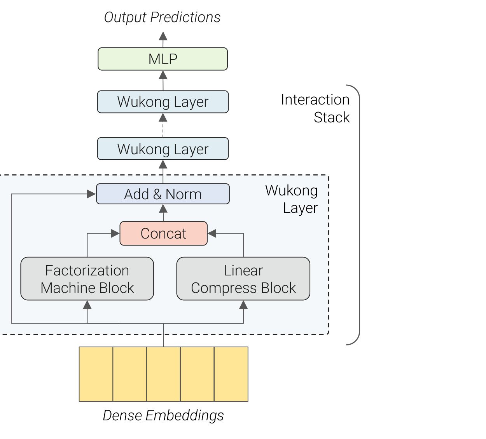
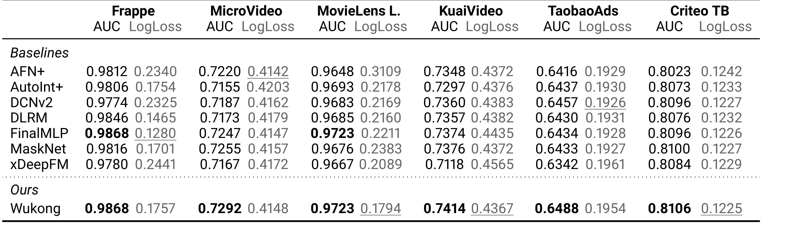
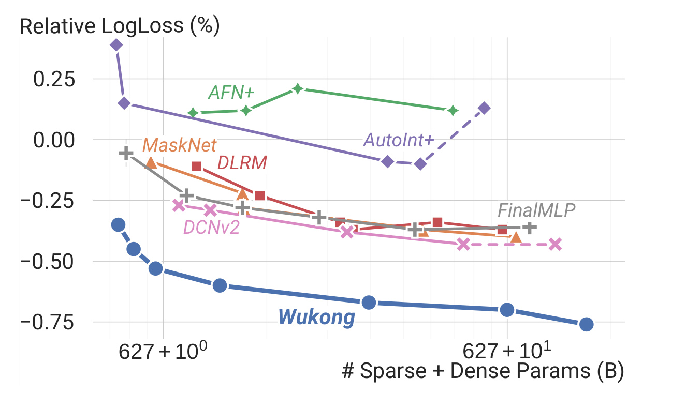
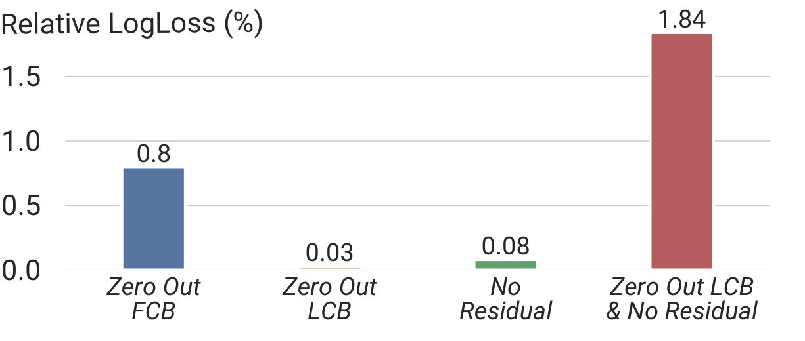
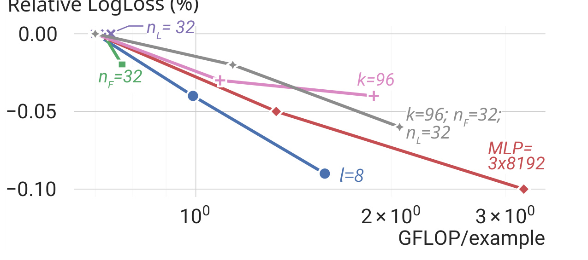
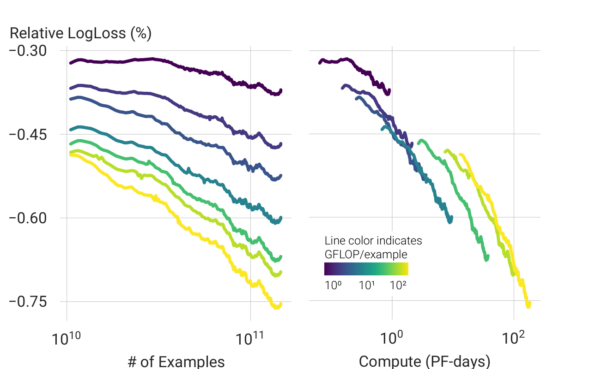
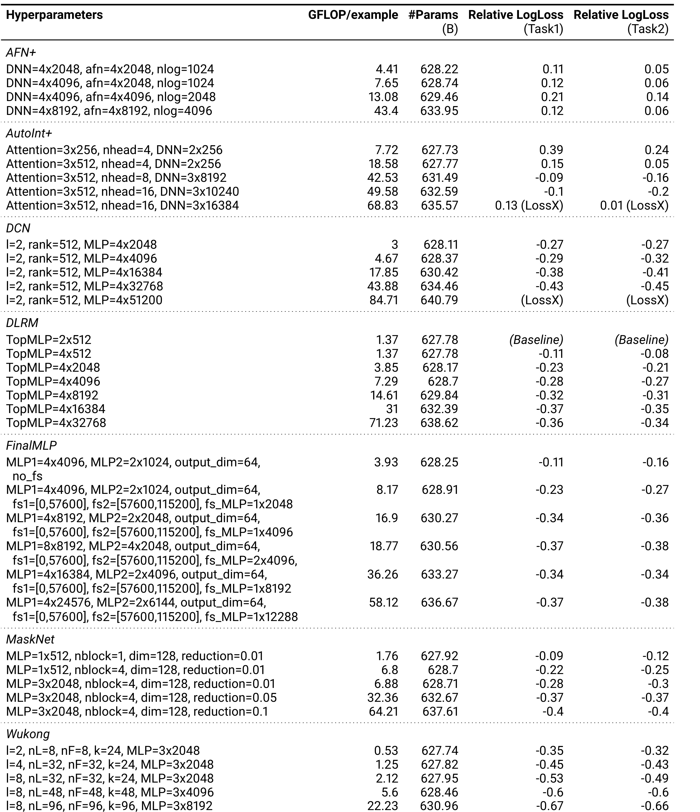

Meta AI 的 Buyun Zhang、Liang Luo、Yuxin Chen 等人在 ICML 2024 论文 Wukong: Towards a Scaling Law for Large-Scale Recommendation 中提出了一个很直接但长期没有被推荐系统充分解决的问题：当数据、参数和训练计算继续变大时，推荐模型能不能像语言模型那样表现出可持续的 scaling law。论文的答案不是继续扩大 embedding table，而是把推荐系统的 dense interaction component 设计成可加深、可加宽、可稳定训练的 Wukong 结构。PMLR 论文页和 OpenReview 页面未列官方代码或项目页，本轮只核验到非官方复现仓库，因此正文不把它作为官方实现引用；阅读重点放在 stacked factorization machines、dense scaling 策略、公开数据集证据和 Meta 内部 146B 样本实验所支持的缩放趋势。
1. 背景和问题
1.1 推荐系统为什么缺少像 LLM 那样稳定的 scaling law
大语言模型里的 scaling law 通常讨论参数量、数据量和训练计算之间的规律性关系。只要模型架构、训练数据和优化设置保持相对稳定，损失随计算预算增加会呈现比较平滑的下降趋势。这种规律对工程系统非常重要，因为它让团队可以提前估计“继续加多少计算大致换来多少质量收益”。推荐系统也同样需要这种规划能力：大型广告、搜索和内容分发系统每天面对的样本量、候选物品、用户行为和上下文特征持续增长，如果模型质量无法随资源投入稳定提升，扩容就会变成成本不可控的试错。
问题在于，深度学习推荐系统的输入形态和语言模型不同。语言模型主要处理 token 序列，主干计算集中在 Transformer 层；推荐系统通常同时处理 dense 数值特征、稀疏 categorical 特征、用户历史、物品属性、上下文、广告侧约束和业务侧信号。稀疏特征通过 embedding table 转成 dense embedding，再交给交互模块做 CTR/CVR 等预测。过去多年里，推荐系统的规模扩展主要发生在 sparse component 上，也就是增加 embedding table 的行数、维度或分片规模，以减少碰撞并增强特征表达。工业界已经出现过万亿级参数推荐模型，但这些参数大多落在稀疏表里，并不意味着模型更擅长捕捉复杂特征交互。
论文把这个传统方向称为 sparse scaling，并指出它有两个关键缺陷。第一，扩大 embedding table 并不必然提升模型对高阶特征交互的表达能力。用户、物品、上下文和历史行为之间的关系不是简单 lookup 可以解决的，真正影响排序质量的是这些 embedding 如何相互组合。第二，sparse lookup 很难利用下一代加速器持续增长的 dense compute 能力。硬件进步主要体现在矩阵乘和张量计算吞吐上，embedding lookup 更偏内存访问和通信瓶颈；如果推荐系统规模扩展仍主要靠表变大，就会增加存储和分布式通信成本，却不能充分转化为有效学习计算。
Wukong 的出发点就是换一个缩放对象：不要只把参数堆到 embedding table，而是让 dense interaction architecture 本身可扩展。所谓 dense scaling，指的是扩大推荐模型中负责特征交互的 dense component，让它在更多计算、更深层数、更宽中间表示下持续改进。这个方向听起来自然，但既有结构并没有稳定解决。例如 DLRM 主要显式捕捉二阶交互，难以系统覆盖更高阶组合；DCNv2、AutoInt+、MaskNet、FinalMLP 等结构可以表达更复杂交互，但扩展到很大 compute budget 时容易收益递减、训练不稳定或内存成本过高。论文的核心问题因此可以表述为：能否设计一种统一推荐交互架构，使它在公开数据集上不弱于现有模型，同时在工业级大数据上随 dense compute、dense parameters 和训练数据规模增加而保持可预测提升。
1.2 论文中的“缩放定律”具体指什么
这篇论文并没有给出像 Kaplan scaling law 那样完整的理论推导，而是提出并实证检验推荐系统中的经验性 scaling law。它关注的是模型质量与复杂度之间的趋势：当 GFLOP/example、dense parameter count 和训练数据量增加时，推荐模型的 LogLoss 或 Relative LogLoss 是否持续改善，而不是很快进入平台期或训练崩溃。这里的关键不是单点指标领先多少，而是曲线形状是否可持续、可外推、可用于资源规划。
论文的主指标之一是 Relative LogLoss。内部实验中以固定 DLRM basic config 为基准，报告相对 LogLoss 改善。值越低表示模型质量越好；论文指出在内部数据上 $0.02\%$ Relative LogLoss 改善已经有显著意义。这个口径比只看 AUC 更适合生产推荐系统，因为广告和内容排序不仅需要区分正负样本，还需要概率校准。CTR 估计一旦失准，后续竞价、预算、pacing 和混排都可能受影响。

图 1 是论文想传达的核心现象：在 Meta 内部大规模数据集上，Wukong 的 Relative LogLoss 随 GFLOP/example 增加持续下降，并且跨过了 $100$ GFLOP/example 的范围；多数 baseline 要么在较低复杂度后趋于饱和，要么进一步扩展时不稳定。图中 Wukong 的蓝色曲线不是只在小模型上好，而是在更大计算预算下仍保持更低 LogLoss。AFN+、DLRM、FinalMLP 的曲线更接近平台；AutoInt+ 和 DCNv2 在扩展时出现训练不稳定或质量回退；MaskNet 受内存和模型尺寸限制。对推荐系统工程来说，这张图的意义在于：如果架构本身不支持 dense scaling，继续加算力可能不会自然变成质量收益；如果架构设计能让交互模块有效加深加宽，推荐模型才有机会获得类似 foundation model 的长期扩展路径。
1.3 Wukong 的问题定位
Wukong 不是一个序列推荐模型，也不是把 LLM 直接搬到推荐系统。它面向的是典型 CTR/排序模型中的 heterogeneous feature interaction：大量 categorical sparse features 被 embedding lookup 转成向量，dense features 被 MLP 转成同维 embedding，然后交给 dense interaction stack 建模。论文关心的不是用户行为序列里的 next item prediction，而是推荐排序场景中多特征、多字段、多任务数据上的交互表达能力。这个定位解释了为什么它选择 Factorization Machine 作为核心构件，而不是 Transformer self-attention。
Factorization Machine 的优势是直接对 embedding 之间的交互建模，经典形式可以显式捕捉二阶交互。推荐系统里很多有效信号本质上就是字段组合：用户年龄与内容类别、广告主与场景、历史兴趣与当前物品、设备与时间等。问题是普通 FM 只覆盖二阶关系，复杂场景需要三阶、四阶甚至更高阶交互。高阶 FM 可以做，但复杂度通常线性或更高地随交互阶数增加，难以在大规模数据上稳定扩展。
Wukong 的关键直觉来自 binary exponentiation：如果每一层都让上一层输出再做二阶交互，那么交互阶数会按指数级上升。第 $i$ 层输入若包含 $1$ 到 $2^{i-1}$ 阶交互，Factorization Machine Block 让任意两类输入相互作用，就能产生最高 $2^i$ 阶交互；Linear Compress Block 保留低阶信息，残差连接帮助稳定训练。这样，层数 $l$ 不只是“多堆一点非线性”，而是直接对应可表达交互阶数上限的扩张。论文由此把 Wukong 设计成一个可以通过加深层数、加宽中间 embedding 数和扩大 MLP 规模来 dense scale 的统一交互骨架。
这一点也解释了 Wukong 与后续 Kunlun 的关系。Kunlun 把 Wukong 当作 Global Interaction expert，用于非序列和序列摘要之间的交叉建模；而 Wukong 本文更基础，它先证明了一个非序列特征交互架构本身可以在大规模推荐数据上呈现 scaling trend。换句话说，Wukong 回答的是“dense feature interaction 能不能 scale”，Kunlun 进一步回答“sequence 与 non-sequence 联合建模如何更高效地 scale”。如果只读结论，很容易把 Wukong 理解成又一个 CTR 模型；但从研究脉络看，它更像是推荐系统 dense scaling 的一块基座。
2. 方法
2.1 总体架构：Embedding Layer 加 Interaction Stack
Wukong 的整体结构很克制：输入特征先经过 Embedding Layer 统一成 dense embeddings，再进入由多层 Wukong Layer 组成的 Interaction Stack，最后通过 MLP 输出预测。它没有引入复杂的任务专用塔或序列模块，而是把全部设计压力放在 interaction stack 上。这种简化是有意为之，因为论文要验证的是交互架构的 scaling property。如果结构本身混入太多业务特化模块，就很难判断质量增长来自可扩展交互，还是来自额外工程技巧。
对于 multi-hot categorical input，每个 sparse feature 通过 embedding table lookup 得到一个或多个 embedding，并用 pooling 聚合。论文规定所有进入交互栈的 embedding 采用统一全局维度 $d$。更重要的特征可以分配多个 embedding，不重要特征可以先用更小底层维度，再拼接并通过 MLP 映射到 $d$ 维。dense input 也通过 MLP 转成同样维度的 latent embedding。最终第一层输入写作：
其中 $n$ 是 dense 与 sparse 部分产生的 embedding 总数，$d$ 是全局 embedding 维度。论文特别强调，它把每个 embedding vector 视为一个整体单元，而不是把所有字段 flatten 成 $nd$ 维向量后做 element-wise cross。这个选择降低了计算负担，也让 Wukong 的交互更接近 feature-wise interaction。对推荐系统而言，这种字段级视角很自然：一个广告 ID、一个用户历史兴趣、一个上下文字段本来就是语义单元，模型要学习的是这些单元之间的关系，而不是一开始就把每个 embedding 维度当成独立特征。

图 2 展示了 Wukong Layer 的结构。每一层有两个并行分支：Factorization Machine Block 负责显式交互，Linear Compress Block 负责线性压缩和低阶信息传递。两条分支输出后 concat，再与残差相加并做 normalization。多层 Wukong Layer 组成 Interaction Stack，最后的 MLP 把交互结果映射到输出预测。这个图最值得注意的是 FMB 与 LCB 的并行关系：Wukong 不是只把 FM 一层层串起来，而是在每层同时保留“产生更高阶交互”和“维持低阶表示”的路径。没有 LCB 或残差，模型容易丢失低阶信息或训练不稳定；没有 FMB，则无法获得显式高阶交互能力。
2.2 Interaction Stack 与交互阶数的指数增长
设第 $i$ 层输入为 $X_i$，一个 Wukong layer 的基本更新为：
符号解释：$FMB_i$ 是第 $i$ 层 Factorization Machine Block，$LCB_i$ 是 Linear Compress Block，$LN$ 是 layer normalization。若 $FMB_i$ 和 $LCB_i$ 的输出 embedding 数与 $X_i$ 不一致，残差路径会先做线性压缩以匹配形状。这个公式揭示了 Wukong 的三条信息流：FMB 产生新的高阶交互，LCB 保留并重组已有 embedding，残差让原始输入不至于被层层转换后遗忘。
论文用归纳法解释交互阶数。第一层输入 $X_0$ 包含一阶信息。若第 $i$ 层输入包含 $1$ 到 $2^{i-1}$ 阶交互，那么 FMB 在任意两个输入 embedding 之间做二阶组合时，可以把 $o_1$ 阶与 $o_2$ 阶交互组合成 $o_1+o_2$ 阶交互，因此最高阶达到 $2^i$。LCB 不增加交互阶数，但能保留低阶信息。所以第 $i$ 层输出可以包含 $1$ 到 $2^i$ 阶交互。这个机制让 Wukong 的层数具有明确含义：每增加一层，不只是更深的非线性变换，而是把可表达交互阶数上限翻倍。
这种“指数级阶数覆盖”是 Wukong 与 HOFM、xDeepFM 等高阶交互结构的主要差异。HOFM 可以优化高阶 FM，但交互阶数扩展仍需要显式处理相应阶数；xDeepFM 通过外积和压缩建模高阶关系，但外积成本在大规模特征上很重。Wukong 则把高阶建模拆成层级递归：每层只做可控的二阶交互，再把交互结果变成下一层 embedding。这样，模型结构上既保持 FM 的显式交互直觉，又避免直接枚举高阶组合。
2.3 Factorization Machine Block：显式交互与表示变换
FMB 是 Wukong 的核心模块。最基础的 Factorization Machine 对输入 embedding 矩阵 $X\in\mathbb{R}^{n\times d}$ 做 pair-wise dot product：
$XX^\top$ 是一个 $n\times n$ 交互矩阵，每个元素表示两个 embedding 的点积关系。它显式捕捉字段之间的二阶相互作用。传统 DLRM 也使用类似 dot product interaction，但通常停留在一层二阶交互。Wukong 的不同之处是，FM 输出不会直接进入预测头，而是经过 MLP 转换成新的 embedding 表示，再作为下一层的输入。
论文把 FMB 写作：
这里先把 $FM(X_i)$ 的交互矩阵 flatten，经过 layer normalization 和 MLP，再 reshape 成 $n_F$ 个 embedding。$n_F$ 是 FMB 输出 embedding 数。这个设计里 MLP 的职责很关键：它不是主要负责隐式捕捉交互，而是把已经显式计算出来的交互结果重新编码成可继续交互的 embedding。换句话说，Wukong 不要求 MLP 自己从原始 dense vector 中“悟出”字段组合关系，而是先用 FM 把组合关系显式列出来，再用 MLP 做压缩、重映射和语义重组。
这种分工也解释了为什么 Wukong 可能比纯 MLP interaction 更适合大规模推荐系统。纯 MLP 把所有字段拼成向量后学习非线性映射，理论表达力很强，但字段交互没有显式结构约束，面对海量稀疏特征时可能需要很大容量才能学到稳定组合。FMB 则把“哪个字段与哪个字段相互作用”明确放进计算图，再让 MLP 学习如何保留、压缩和组合这些交互。对 CTR 模型来说，这种归纳偏置很符合业务数据：很多有效特征不是孤立字段，而是字段对或字段组。
2.4 Linear Compress Block：保留低阶路径和控制 embedding 数
如果每层只使用 FMB，模型会不断把低阶信息转换成高阶表示，可能导致简单但重要的一阶、二阶信号被削弱。LCB 的作用就是线性重组输入 embedding，不主动增加交互阶数：
其中 $W_L\in\mathbb{R}^{n_L\times n_i}$，$n_i$ 是第 $i$ 层输入 embedding 数，$n_L$ 是 LCB 输出 embedding 数。这里的乘法作用在 embedding 个数维度上，相当于把上一层的 $n_i$ 个 embedding 线性压缩或重组为 $n_L$ 个 embedding，每个 embedding 仍保留 $d$ 维表示。
LCB 有三层意义。第一，它提供低阶信息通道，保证第 $i$ 层输出中不仅有 FMB 产生的高阶关系，也有原始和中低阶交互的线性组合。第二，它控制每层 embedding 数，避免 FMB 输出导致表示数量失控。第三，它与残差连接共同稳定训练。论文的消融结果显示，单独去掉 LCB 或单独去掉 residual 影响较小，但同时去掉二者质量会显著退化。这说明二者在保留信息路径上有一定替代关系：残差可以直接传递输入，LCB 可以学习压缩后的低阶通道；两者都缺失时，模型过度依赖 FMB 的高阶变换，训练和表达都会变差。
从工程角度看，LCB 也是 Wukong 可以 scale 的关键。如果每层都保留全部输入 embedding 并额外生成大量 FMB embedding，复杂度会很快不可控；如果压缩过狠，又会丢掉重要字段信息。$n_L$ 因此成为缩放超参数之一。论文后续实验说明，单独增大 $n_L$ 在某些配置下收益会平台化，但与 $k$、$n_F$ 联合增大时可以带来更明显质量提升。这符合直觉：LCB 的作用不是孤立变强，而是为 FMB 和后续层提供合适的信息带宽。
2.5 Optimized FM：把二次复杂度降到可用范围
普通 FM 计算 $XX^\top$ 的复杂度和存储都随 embedding 数 $n$ 二次增长。在公开数据集上这可能还能接受，但内部推荐数据有数百甚至上千特征，直接构造 $n\times n$ 交互矩阵会很昂贵。Wukong 因此采用 optimized FM，将交互矩阵压缩到 $n\times k$：
其中 $Y\in\mathbb{R}^{n\times k}$ 是可学习投影矩阵，$k$ 是压缩 embedding 数。若 $d\le n$，$XX^\top$ 的 rank 至多为 $d$。论文基于这一低秩性质认为，用 $Y$ 将输出从 $n\times n$ 压到 $n\times k$ 在理论上可以不丢失关键信息，前提是 $k$ 足够表达有效子空间。
更重要的是，利用结合律可以先算 $X^\top Y$：
这样复杂度从 $O(n^2d)$ 降为 $O(nkd)$，当 $k\ll n$ 时收益很大。这个改写是 Wukong 能进入大规模推荐系统的必要条件。否则，stacked FM 的高阶表达力会被第一层的二次交互成本吞掉。
论文还提到，投影矩阵 $Y$ 可以由输入经过线性压缩和 MLP 动态生成，使投影对当前样本更有适应性。这一点和 attention 里的 data-dependent projection 有些相似：不是固定选取某些交互维度，而是根据输入特征决定怎样压缩交互矩阵。这里的 $k$ 因此成为 Wukong 的另一个缩放旋钮。增大 $k$ 会让 optimized FM 保留更多交互方向，但也增加计算；缩小 $k$ 可以降成本，但可能压掉重要字段组合。论文实验里，增大 $k$ 有收益，且与 $n_F$、$n_L$ 联合增大效果更好。
2.6 复杂度、缩放超参数和训练策略
论文将 Wukong 的主要缩放超参数概括为五类：Interaction Stack 层数 $l$，FMB 输出 embedding 数 $n_F$，LCB 输出 embedding 数 $n_L$，optimized FM 压缩维度 $k$，以及 FMB 内 MLP 的层数和 hidden size。它们分别控制不同方面的容量。$l$ 决定最高交互阶数和层级抽象深度；$n_F$ 决定每层新交互表示的带宽；$n_L$ 决定低阶信息通道的宽度；$k$ 决定 FM 压缩后保留多少交互方向；MLP size 决定交互结果重编码能力。
在简化假设下，若每层使用相同超参数，FMB 中最大全连接层大小为 $h$，第一层 FMB 的复杂度由 FM 和 MLP 组成。optimized FM 约为 $O(nkd)\approx O(ndh)$，MLP 约为 $O(nkh+h^2+n_Fdh)\approx O(ndh+h^2)$，LCB 约为 $O(n n_L d)\approx O(ndh)$。后续层输入 embedding 数为 $n'=n_L+n_F$，复杂度约为 $O(n'dh+h^2)$。整体可写成：
这个近似的重点不是给出严格上界，而是说明 Wukong 避免了随特征数二次爆炸。层数增长带来的额外成本与压缩后的 embedding 数有关，而不是与原始特征数的平方直接绑定。只有这样，stacked FM 才能从一个概念上优雅的高阶交互设计变成可训练的工业模型。
缩放策略上，论文先增大 $l$，因为层数直接扩展可捕捉交互阶数；随后再扩大 $n_F$、$n_L$、$k$ 和 MLP size，以增强每一层表达更广泛交互的容量。这一点很符合 Wukong 的结构逻辑：如果层数太浅，再宽也主要是在有限阶数内扩容量；如果层数足够，再增加中间宽度和压缩维度，才能让更高阶交互有足够表示空间。后续 Figure 5 的实验也显示，单独增加 layer count 带来明显收益，MLP size 也很重要，而 $k$、$n_F$、$n_L$ 更适合联合扩展。
2.7 分布式训练和数值实现
Wukong 的论文没有只停留在架构图，而是讨论了让高复杂度模型可训练的系统实践。Embedding layer 使用 Neo 和 NeuroShard 提供的 column-wise sharded embedding bag 实现，解决大规模 embedding table 的分布式存储和 lookup 问题。Dense part 使用 FSDP，并调节 sharding factor，在显存容量和冗余通信之间取平衡。这个设置说明，Wukong 虽然强调 dense scaling，但并没有否认推荐系统 sparse component 的巨大规模；它是在固定或已有 sparse infrastructure 之上，把 dense interaction 做成更有效的缩放对象。
训练效率方面，论文使用 operator fusion 提升性能，并积极采用量化来降低 compute、memory 和 communication overhead。Embedding table 以 FP16 训练，forward 中 embedding lookup 结果用 FP16 通信，backward 中用 BF16 通信，dense parameter gradient 传输也用 BF16。这里可以看出 Wukong 的工程目标不是追求一个纯理论模型，而是在实际大规模训练约束中尽量把额外 dense compute 放到 GPU 擅长的路径上。
这个实现选择也回应了 sparse scaling 的缺陷。传统推荐模型扩表会增加大量参数和通信，但不一定增加高效矩阵计算；Wukong 则试图把更多预算转成 dense interaction 的矩阵运算，同时通过 FSDP、fusion 和量化控制可训练性。它并没有完全解决 serving 成本问题，论文在讨论中也承认高复杂度模型实时服务存在挑战，可能需要多任务 foundation model 或 distillation 把大模型知识迁移到小模型。但从训练侧看，Wukong 已经把推荐系统“应该如何吃掉更多计算”这个问题向前推进了一步。
2.8 附录中的高阶交互解释
附录 D 用一个更接近传统矩阵分解的视角解释 Wukong。普通二阶 factorization machine 可以理解为最小化：
其中 $r_{ij}$ 是用户 $j$ 对物品 $i$ 的反馈，$X^1$ 表示一阶 user/item embedding。点积 $X^1X^{1\top}$ 给出二阶交互预测。Wukong 把每层交互结果变成新的表示 $X^2,X^3,\ldots$，于是 $l$ 层模型可以近似看成：
这个公式不应被理解为实际训练中显式枚举所有阶数，而是表达 Wukong 的归纳偏置：模型通过层层 FM 与 MLP，把一阶、二阶、三阶直到高阶交互逐步编码进 embedding 表示，再由后续层继续组合。它比“高阶特征越多越好”的朴素想法更可控，因为每一层只需要处理压缩后的表示和可配置的 $n_F,n_L,k$，而不是直接展开组合爆炸。
从这个角度看，Wukong 的创新不是发明了 FM，也不是证明了高阶交互重要，而是把 FM 变成了一个可缩放的深层模块。普通 FM 是一个 interaction operator，Wukong 把它组织成 interaction backbone。推荐系统长期依赖人工特征交叉、wide-and-deep 结构或不同形式的 cross network，Wukong 则给出了一条更统一的路径：用显式二阶交互递归构造高阶关系，再用工程可控的 dense scaling 策略让模型随数据和计算变大。
3. 实验结果
3.1 公开数据集：Wukong 的基本有效性
论文先在六个公开数据集上评估 Wukong，包括 Frappe、MicroVideo、MovieLens Latest、KuaiVideo、TaobaoAds 和 Criteo Terabyte。它们覆盖 app usage、短视频、电影评分、点击率预估和广告点击日志等任务，规模从 $0.29M$ 样本到 Criteo 的 $4B$ 样本不等。公开数据集部分主要验证 Wukong 在低复杂度区域是否具备基本竞争力，避免出现“只有内部数据有效”的问题。
Baselines 包括 AFN+、AutoInt+、DLRM、DCNv2、FinalMLP、MaskNet 和 xDeepFM。这些模型覆盖了推荐系统中常见的高阶交互、attention 交互、cross network、two-stream MLP 和 feature-wise masking 等路线。评价指标为 AUC 和 LogLoss，AUC 越高越好，LogLoss 越低越好。论文在较小数据集上使用 BARS benchmark 的预处理和配置，并对 embedding dimension 等设置做补充测试；在 Criteo Terabyte 上进行了近 3000 次搜索，以便让 baseline 与 Wukong 在较现实的 one-pass training 设置下公平比较。

表 2 显示，Wukong 在六个公开数据集上都达到最高或并列最高 AUC：Frappe 为 $0.9868$，MicroVideo 为 $0.7292$，MovieLens Latest 为 $0.9723$，KuaiVideo 为 $0.7414$，TaobaoAds 为 $0.6488$，Criteo Terabyte 为 $0.8106$。这说明 Wukong 的 stacked FM 结构并不是只适合某一个内部任务，它在不同规模和不同类型推荐数据上都能提供稳定的区分能力提升。
但 LogLoss 结果更有细节。Wukong 在 MovieLens Latest、KuaiVideo 和 Criteo Terabyte 上达到最佳或接近最佳 LogLoss，但在 Frappe、MicroVideo、TaobaoAds 上不是所有 LogLoss 都领先。例如 Frappe 上 FinalMLP 的 LogLoss 为 $0.1280$，明显低于 Wukong 的 $0.1757$；TaobaoAds 上 DCNv2/MaskNet/FinalMLP 等 LogLoss 也优于 Wukong。这个结果提醒我们，Wukong 的公开数据集优势主要体现在 AUC 和跨数据集鲁棒性，不应被解读成所有指标、所有规模都无条件碾压。论文真正强调的 scaling law 证据来自后续内部大规模数据，而不是公开小表上的单点 LogLoss。
3.2 内部数据集：规模、指标和 baseline
内部数据集是论文最重要的实验。它包含 $146B$ entries 和 $720$ distinct features，样本数约为 Criteo Terabyte 的 $30$ 倍，特征数约为 Criteo 的 $20$ 倍。任务包括 Task1 的兴趣行为预测和 Task2 的转化行为预测，主文报告 Task1，附录给出 Task2。这个数据规模足以观察公开小数据中很难出现的现象：模型在几十到上百 GFLOP/example 范围内扩展时，质量是否继续改善，训练是否稳定，参数量增长是否真的有效。
内部实验使用几个生产相关指标。$GFLOP/example$ 衡量每个样本训练时的计算复杂度；PF-days 衡量总训练计算；参数量中 sparse embedding table 固定为 $627B$ 参数，因此不同模型的参数增长主要来自 dense component；Relative LogLoss 以固定 DLRM basic config 为基准。这个设置非常重要，因为它把 sparse scaling 的影响固定住，让实验更聚焦于 dense interaction architecture 的扩展能力。如果某个模型只是通过扩大 embedding table 获得收益，就无法在这个实验里表现为 dense scaling law。
训练设置上，所有模型使用相同大 batch size，实验在 $128$ 或 $256$ 张 H100 GPU 上进行。优化器为 dense part 的 Adam 和 sparse embedding table 的 Rowwise Adagrad。Baseline 沿用公开实验中的模型集合，但 xDeepFM 因外积操作在内部数据上导致 out-of-memory 而未纳入结果。这个排除本身也说明一个事实：某些高阶交互模型在公开数据上可跑，并不代表能直接进入工业级特征规模。
3.3 质量随 compute 和参数扩展的趋势
论文在 Quality vs. Compute Complexity 中给出经验拟合：
这里 $x$ 对应计算复杂度，$y$ 对应模型质量相关的 Relative LogLoss 表达。这个公式的指数很小，说明每次计算增加带来的改进很慢；但在推荐系统中，即便 $0.1\%$ 级别 LogLoss 改善也可能有生产意义。更重要的是趋势是否持续。论文报告 Wukong 在两数量级复杂度范围内保持改善，约等于每 quadrupling complexity 获得约 $0.1\%$ improvement。相比之下，AFN+、DLRM、FinalMLP 在某个复杂度后开始平台化，AutoInt+ 和 DCNv2 进一步扩展时出现明显训练不稳定，MaskNet 受内存消耗限制。

图 3 从参数量角度观察同一现象。横轴是 sparse+dense 参数量，注意 sparse table 固定为 $627B$，所以图中 $627+10^0$ 到 $627+10^1$ 的变化主要来自 dense parameters。Wukong 在所有参数规模上都比 baseline 低约 $0.2\%$ Relative LogLoss，并且能一路改善到超过 $637B$ 总参数。这个结果说明 Wukong 不是靠某个小模型配置偶然领先，而是当 dense parameter budget 增长时仍能把参数转化为质量。相比之下，很多 baseline 加宽加深后出现边际收益下降或质量回退。
这里需要避免一个常见误解：Wukong 的总参数量看起来都在 $627B$ 以上，但绝大多数是固定 sparse embedding table。论文要证明的不是“万亿参数推荐模型一定更好”，而是在巨大 sparse 基座固定时，dense interaction component 仍然可以成为可控的质量增长来源。这个结论对工业推荐更有用，因为许多系统已经拥有庞大 embedding infrastructure，真正的瓶颈是如何在其上增加可计算、可训练、可服务的 dense interaction。
3.4 组件消融：FMB 是主动力，LCB 和残差稳定信息路径
论文做了一个非常直接的消融：在 Wukong Interaction Stack 中分别 zero out FMB、zero out LCB、去掉 residual、同时去掉 LCB 和 residual。这个实验不是测试超参数，而是测试每个结构部件是否真的必要。

图 4 显示，zero out FMB 会导致 $0.8\%$ Relative LogLoss 退化，是最严重的单组件破坏。这符合 Wukong 的机制：FMB 是显式产生高阶交互的主路径，没有它，模型就失去 stacked FM 的核心能力。单独 zero out LCB 只退化 $0.03\%$，单独去掉 residual 退化 $0.08\%$，影响较小；但同时 zero out LCB 和去掉 residual 会退化 $1.84\%$，远高于单独删除的叠加直觉。这说明 LCB 与 residual 在保留低阶信息和稳定训练方面存在互补或替代关系。只要其中一条低阶路径还在，模型还能维持相当多的信息流；两条都断开时，高阶变换会变得过于孤立。
这个消融对工程实现有两个启发。第一，优化资源时不能轻易削弱 FMB，因为它是 Wukong 质量来源。第二，如果为了节省计算和参数考虑简化 LCB，需要同时评估残差和 shape matching 设计，不能只看单个模块的独立影响。论文还指出，通过 zero-padding FMB output 加 residual，LCB 在某些情况下可以简化；这给后续模型压缩和 serving 优化留下空间。
3.5 单组件扩展：层数和 FMB MLP 宽度最关键
为了理解 Wukong 如何 scale，论文从一个 base configuration 出发，逐项 double 关键超参数：层数 $l$、LCB 输出 $n_L$、FMB 输出 $n_F$、optimized FM 压缩维度 $k$ 和 FMB MLP size。

图 5 的趋势可以拆成三类。第一，增加层数 $l$ 带来明显质量提升，因为它直接提升可表达交互阶数。第二，增大 FMB MLP size 也带来显著收益，说明交互结果重编码的容量很重要；如果 FM 产生了丰富交互，但 MLP 太小，信息会在 reshape 前被压掉。第三，增大 $k$、$n_F$、$n_L$ 单独都有一定收益，但联合增大 $k,n_F,n_L$ 的效果更明显。这说明 Wukong 的宽度扩展需要匹配：FM 压缩维度、FMB 输出带宽和低阶传递带宽共同决定每层能保留多少交互信息。
这个实验也支持论文的缩放策略：先扩层数，再扩宽度和 MLP。如果只扩大 $n_L$，可能只是保留更多低阶线性组合，不一定产生更高阶表达；如果只扩大 $k$，可能让 FM 保留更多交互方向，但后续 FMB 输出或 MLP 容量不足时也难以释放；如果只扩大 MLP，输入交互方向不足也有限。Wukong 的 scaling 因此不是一个单超参数曲线，而是一组结构超参数协同扩张。
3.6 数据量和训练计算：大模型更数据高效，但尚未触及极限
附录 E 进一步观察 Wukong 随训练数据量和训练 compute 的变化。论文对不同 GFLOP/example 的 Wukong 模型进行 one-pass training，并观察 Relative LogLoss 随样本数与 PF-days 的下降趋势。

图 6 左侧显示，所有 Wukong 模型随着样本数增加持续改善，到 $146B$ data 结束时仍未明显收敛。更大的模型曲线更低，并且在同等质量目标下需要的样本数更少，表现出类似 LLM 中“更大模型更 data-efficient”的现象。右侧用 PF-days 观察训练计算，显示不同 compute 规模的模型在总训练计算增加时也继续下降。这对推荐系统很重要，因为很多内部训练不是多轮小数据 epoch，而是大规模日志流上的 one-pass 或接近 one-pass 训练；模型是否能在持续数据流中保持学习能力，比在小 benchmark 上反复调参更有生产意义。
但这个结果也暴露了局限：论文没有找到 Wukong 的 scaling limit，因为内部数据量和计算预算仍不足以让最大模型收敛到平台。换句话说，Wukong 展示的是“在已测试范围内仍然可扩”，而不是“可以无限扩”。这与论文标题中的 Towards 一致。它不是完成了推荐系统 scaling law 的理论闭环，而是给出了一个强实验证据：推荐 dense interaction architecture 至少可以比既有 baseline 更长时间地吃掉计算和数据。
3.7 详细配置：Wukong 的优势不是靠少量孤立设置
附录 Table 5 列出内部实验的详细超参数、GFLOP/example、参数量和 Task1/Task2 Relative LogLoss。这个表很长，但对判断论文可信度很重要，因为它展示了每个模型是如何被扩展的，而不是只给最终曲线。

表 5 中，Wukong 从 $l=2,n_L=8,n_F=8,k=24,MLP=3\times2048$ 的 $0.53$ GFLOP/example 配置开始，到 $l=8,n_L=192,n_F=192,k=192,MLP=3\times16384$ 的 $108$ GFLOP/example 配置。Task1 Relative LogLoss 从 $-0.35$ 改善到 $-0.76$，Task2 从 $-0.32$ 改善到 $-0.76$。这说明 Wukong 的改善在两个任务上都存在，而不是只对主文 Task1 有效。
Baseline 的细节也值得看。DLRM 将 TopMLP 从 $2\times512$ 扩到 $4\times32768$，GFLOP/example 达到 $71.23$，Task1 最好约 $-0.37$ 后平台；DCN 扩到 $84.71$ GFLOP/example 时出现 LossX；AutoInt+ 继续加 attention head 和 DNN size 后也出现 LossX 或质量回退；MaskNet 随 block 和 reduction 扩展后达到约 $-0.4$。这些配置说明，论文不是拿很弱 baseline 做比较，而是对每个模型都尝试了对应的扩展策略。Wukong 的优势在于它的扩展路径更稳定、更能转化为 LogLoss 改善。
当然，这张表也提醒我们外部复现难度很高。内部数据、分布式训练框架、embedding shard、优化器、H100 资源和超大 batch 都不是普通研究环境能直接复现的。公开数据集可以验证结构有效性，但 scaling law 的主结论依赖 Meta 内部数据。读这篇论文时应把它看作工业实证报告，而不是完全可复现的公开 benchmark 论文。
3.8 与 Transformer-based interaction 的对比
附录 F 讨论为什么 Wukong 可能比 AutoInt+ 这类 Transformer-based interaction 更适合推荐特征交互。二者表面上都有 stacked dot-product 结构，但投影和层形状不同。Transformer 中 FFN 通常是 embedding/position-wise 的统一投影，而 Wukong 的 MLP 作用在 flattened input embeddings 上，相当于给不同特征学习不同投影。推荐系统的输入字段高度异构，用户 ID、广告 ID、时间、设备、上下文和行为统计不一定共享同一个语义空间；bit-wise MLP 或 flattened-feature projection 可能更适合这种异质性。
效率上，Wukong 更接近 pyramid shape，可以通过 LCB 和 FMB 输出数控制每层 embedding 数，避免所有层维持统一 token 数。Transformer 常用 uniform shape，适合语言 token 序列，但在推荐系统中可能保留了过多不必要计算。论文将 Wukong 组件替换到 AutoInt+ 中做实验：把 value projection 从 FFN 改成 MLP 改善 LogLoss，给 attention 后加入 bit-wise MLP 也有收益，结合 pyramid layer shape 可以在更少 FLOPs 下接近或超过 scaled-up AutoInt+。这说明 Wukong 的价值不只是 FM 本身，还包括“针对异构特征而不是同质 token 设计投影和层形状”这一点。
4. 总结
4.1 我的判断
Wukong 这篇论文的价值不在于提出了一个全新算子，而在于把推荐系统 dense interaction 的缩放问题讲得足够清楚。过去推荐模型的“大”常常等价于 embedding table 更大、分片更多、稀疏参数更多；Wukong 把问题转向“交互模块能否随计算和数据稳定变强”。Stacked FM 的结构直觉很简单：每层做二阶交互，然后把结果变成下一层 embedding，从而用层数获得指数级交互阶数覆盖。真正难的是让这个想法在数百特征、百亿级样本和上百 GFLOP/example 范围内仍然可训练、可比较、可持续改善。
我认为这篇论文最值得保留的结论有三个。第一，高阶特征交互仍然是推荐系统的核心问题，即使 LLM 和序列模型很热，也不能跳过字段级交叉建模。第二，dense scaling 对推荐系统是可行方向，但必须有适合异构特征的结构归纳偏置；简单把 Transformer attention 或大 MLP 堆大，不一定获得稳定 scaling。第三，推荐系统的 scaling law 需要同时看质量、计算、参数、训练稳定性和 serving 约束，不能只看公开数据集 AUC 或单点 LogLoss。
4.2 工程启发与复现建议
如果要在自己的推荐系统中借鉴 Wukong，我会从小规模结构验证开始，而不是直接追求上百 GFLOP/example。第一步可以在现有 CTR 模型的 dense interaction 部分替换为一到两层 Wukong layer，固定 embedding table 和特征工程，只比较 interaction stack 的增益。第二步观察 $l,n_F,n_L,k$ 的协同关系，尤其是增加层数后是否真的带来稳定 AUC/LogLoss 改善。第三步再评估 optimized FM 的实现成本，避免直接构造 $n\times n$ 交互矩阵。第四步必须同时记录训练吞吐、显存、通信、线上延迟和蒸馏方案，因为 Wukong 的高复杂度版本更像训练用 backbone，不一定能直接作为实时 serving 模型。
复现时还要注意公开数据集结论的边界。表 2 中 Wukong 的 AUC 很强，但 LogLoss 并非所有数据集都领先；如果业务目标高度依赖概率校准，就不能只以 AUC 作为上线依据。内部 scaling 曲线更有启发，但数据不可公开，外部团队需要用自己的长期日志和真实特征规模验证。最有价值的复现实验不是把论文所有 baseline 跑齐，而是在一个固定生产候选模型上比较 dense interaction 扩展是否带来持续收益：同样的 sparse table、同样数据窗口、同样训练 budget 下，Wukong layer 是否比现有 CrossNet、AutoInt 或 MLP interaction 更能利用额外计算。
4.3 局限与后续跟进
这篇论文的主要局限也很明显。第一，scaling law 的关键证据来自 Meta 内部数据，外部无法完全复核；公开数据集只能证明基本有效性，不能证明大规模缩放规律。第二，论文没有触及 Wukong 的最终极限，最大模型仍未收敛，尚不清楚继续扩到更高 compute 后是否会出现新的平台或不稳定。第三，服务成本讨论较粗，论文提出多任务 foundation model 和 distillation 作为方向，但没有给出完整线上部署方案。第四，Wukong 主要处理非序列或一般字段交互，对长行为序列、跨事件建模和上下文动态更新的覆盖不如后续 Kunlun 这类联合架构。
后续我会重点关注三件事。其一，Wukong-style stacked FM 是否会成为推荐系统 global interaction 的通用子模块，继续出现在 Kunlun、InterFormer 后续版本或其他工业架构里。其二，公开社区是否能在 Criteo、KuaiVideo 或更大开放广告数据上复现类似 dense scaling 曲线，而不是只复现小模型 AUC。其三，Wukong 与 LLM4Rec、序列推荐和多模态推荐的结合方式：当用户历史、内容理解 embedding 和广告上下文同时进入模型时，哪些交互应交给 stacked FM，哪些应交给 sequence attention，哪些应通过蒸馏进入轻量 serving 模型。若这些问题继续被系统化回答，推荐系统的 scaling law 才可能从 Meta 内部实证走向更广泛的工程方法论。